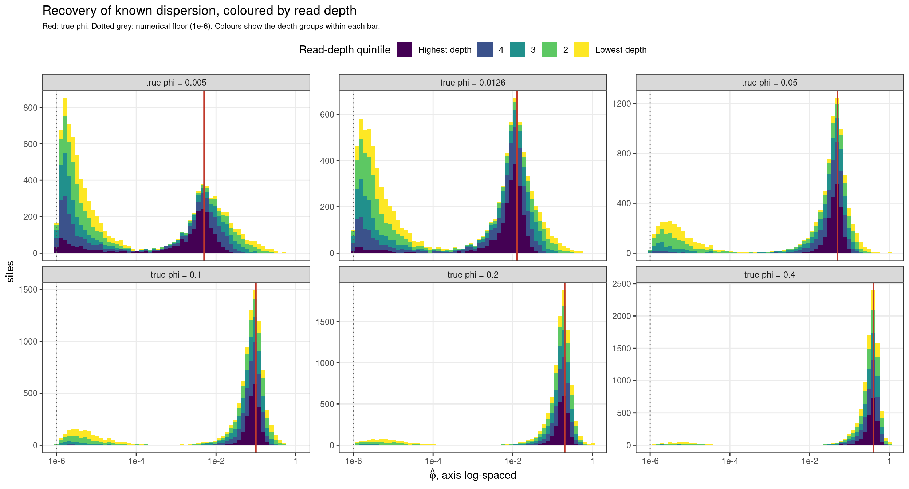
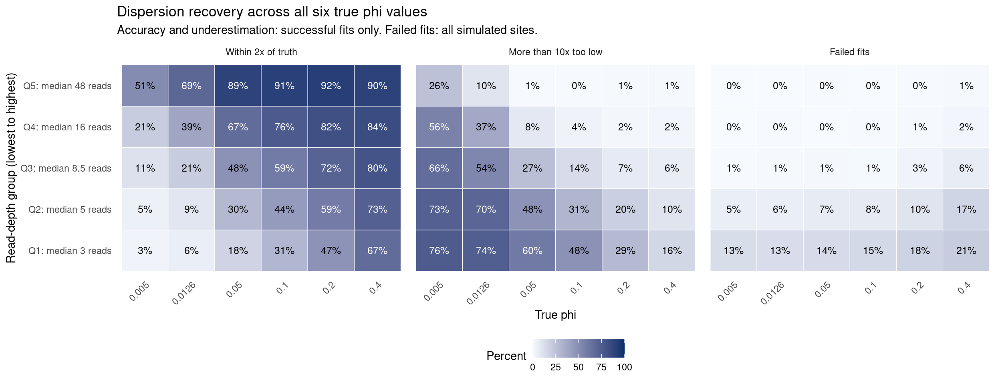
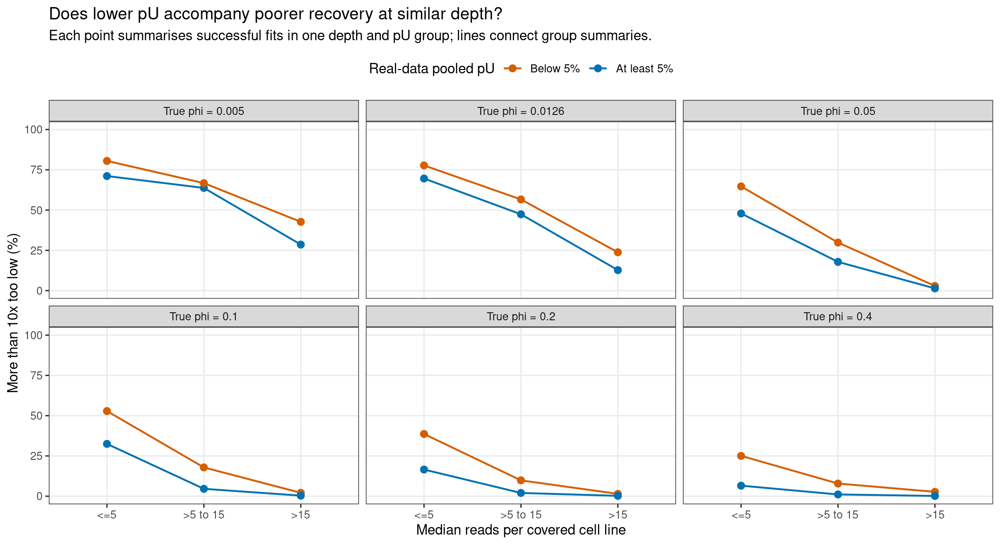
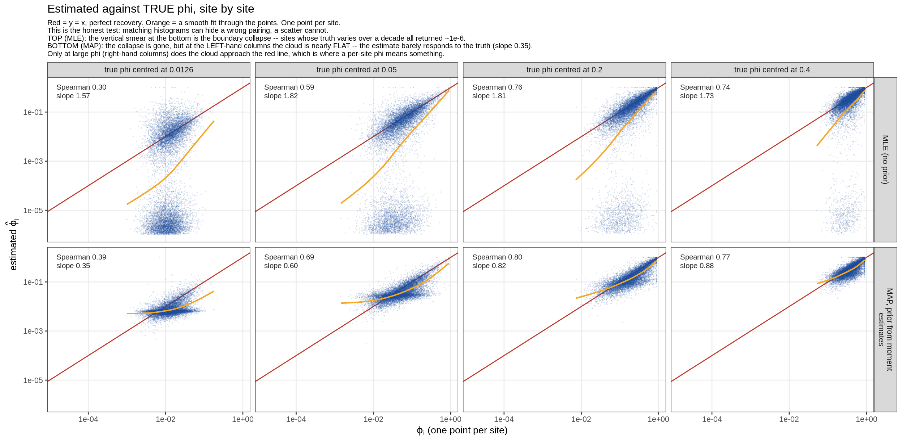

Last updated: 2026-09-29
Checks: 6 1
Knit directory: pumseq/
This reproducible R Markdown analysis was created with workflowr (version 1.7.0). The Checks tab describes the reproducibility checks that were applied when the results were created. The Past versions tab lists the development history.
The R Markdown file has unstaged changes. To know which version of
the R Markdown file created these results, you’ll want to first commit
it to the Git repo. If you’re still working on the analysis, you can
ignore this warning. When you’re finished, you can run
wflow_publish to commit the R Markdown file and build the
HTML.
Great job! The global environment was empty. Objects defined in the global environment can affect the analysis in your R Markdown file in unknown ways. For reproduciblity it’s best to always run the code in an empty environment.
The command set.seed(20260202) was run prior to running
the code in the R Markdown file. Setting a seed ensures that any results
that rely on randomness, e.g. subsampling or permutations, are
reproducible.
Great job! Recording the operating system, R version, and package versions is critical for reproducibility.
Nice! There were no cached chunks for this analysis, so you can be confident that you successfully produced the results during this run.
Great job! Using relative paths to the files within your workflowr project makes it easier to run your code on other machines.
Great! You are using Git for version control. Tracking code development and connecting the code version to the results is critical for reproducibility.
The results in this page were generated with repository version 611d2ab. See the Past versions tab to see a history of the changes made to the R Markdown and HTML files.
Note that you need to be careful to ensure that all relevant files for
the analysis have been committed to Git prior to generating the results
(you can use wflow_publish or
wflow_git_commit). workflowr only checks the R Markdown
file, but you know if there are other scripts or data files that it
depends on. Below is the status of the Git repository when the results
were generated:
Ignored files:
Ignored: analysis/qtl_mapping_summary_cache/
Untracked files:
Untracked: analysis/qtl_mapping_betabinomial_phi_estimation.Rmd.bak_predepthplots_20260929
Unstaged changes:
Modified: analysis/qtl_mapping_betabinomial_phi_estimation.Rmd
Note that any generated files, e.g. HTML, png, CSS, etc., are not included in this status report because it is ok for generated content to have uncommitted changes.
These are the previous versions of the repository in which changes were
made to the R Markdown
(analysis/qtl_mapping_betabinomial_phi_estimation.Rmd) and
HTML (docs/qtl_mapping_betabinomial_phi_estimation.html)
files. If you’ve configured a remote Git repository (see
?wflow_git_remote), click on the hyperlinks in the table
below to view the files as they were in that past version.
| File | Version | Author | Date | Message |
|---|---|---|---|---|
| html | 611d2ab | XSun | 2026-09-29 | update |
| Rmd | 2b289ac | XSun | 2026-09-29 | update |
| html | 2b289ac | XSun | 2026-09-29 | update |
| Rmd | 728cb14 | XSun | 2026-09-29 | update |
| Rmd | 4ecca41 | XSun | 2026-09-29 | update |
| html | 4ecca41 | XSun | 2026-09-29 | update |
| Rmd | 5c60be1 | XSun | 2026-09-28 | update |
| html | 5c60be1 | XSun | 2026-09-28 | update |
| Rmd | 2a471bb | XSun | 2026-09-16 | update |
| html | 2a471bb | XSun | 2026-09-16 | update |
suppressMessages({ library(data.table); library(ggplot2) })
knitr::opts_chunk$set(echo = FALSE, warning = FALSE, message = FALSE,
fig.align = "center", fig.width = 10)
PSI <- "/project/xinhe/xsun/pumseq/pumseq_processed/psi_qtl"
RC <- file.path(PSI, "qtl_betabinomial/phi_recovery")
LP <- file.path(PSI, "qtl_betabinomial/low_phi_validation")Dispersion (φ) describes variation in pU rates beyond binomial read-sampling noise, after accounting for the covariates. We tested how well it can be estimated at individual sites using simulations based on our data.
Small φ is difficult to estimate at many sites. Estimates often approach zero, especially when the data contain little information. Shrinkage reduces this pile-up, but at small φ it often returns a value near the shared prior centre rather than distinguishing individual sites.
For each site, we keep the real read depths and the expected pU rates fitted from the real data using three phenotype PCs. We choose a known φ, simulate counts from the beta-binomial model, and refit the model to those counts.
Each panel below uses one true φ for all sites. We repeat this at six values from 0.005 to 0.4, with about 10,000 sites and typically 49 covered cell lines per site. The generating means vary across sites and cell lines; the refit estimates the means and φ from the simulated counts.

At small true φ, the estimates include a group near the truth and a pile-up at the numerical floor, 10⁻⁶. The pile-up becomes smaller as true φ increases. A boundary estimate can arise from limited information; it does not by itself show that the optimiser is broken or that the true dispersion is zero.
The histogram and accuracy table include successful fits only. Failed fits are reported separately below.
| true phi | simulated | successful | failed |
|---|---|---|---|
| 0.0050 | 10467 | 10054 | 413 |
| 0.0126 | 10467 | 10048 | 419 |
| 0.0500 | 10467 | 9985 | 482 |
| 0.1000 | 10467 | 9954 | 513 |
| 0.2000 | 10467 | 9785 | 682 |
| 0.4000 | 10467 | 9472 | 995 |
| true phi | within 2x of truth | >10x too low | at the 1e-6 floor | median fold error |
|---|---|---|---|---|
| 0.0050 | 18.8% | 58.9% | 20.5% | 448.8 |
| 0.0126 | 29.8% | 48.3% | 14.1% | 9.4 |
| 0.0500 | 51.6% | 27.5% | 5.0% | 1.9 |
| 0.1000 | 61.4% | 18.3% | 2.6% | 1.6 |
| 0.2000 | 71.5% | 11.0% | 1.2% | 1.4 |
| 0.4000 | 79.4% | 6.6% | 0.6% | 1.3 |
The simulations cover six true φ values, from 0.005 to 0.4. The heatmaps show how recovery changes with both dispersion and read depth. Depth groups are fixed across the six settings, using quintiles of median depth among covered cell lines in the real-data templates.

Darker cells mean larger percentages in every panel: higher is better in the accuracy panel, but worse in the underestimation and failure panels. Read the failure panel alongside accuracy, since excluding failed fits can change which sites contribute to the comparison. More than tenfold underestimation is a relative error criterion; it is not the same as reaching the numerical floor.
Low mean pU is also associated with estimates near zero. To examine it alongside depth, we group sites by their real-data pooled pU percentage (converted reads divided by total reads). This is a summary of the observed rate, not the full vector of fitted cell-line-specific means used to generate the simulations.

The separation between the two pU groups can be compared across depth and true φ. These comparisons do not isolate causal effects: sites differ in their depth distributions and fitted means. A controlled simulation varying the mean while holding depth and φ fixed would separate those effects more directly. These results do not yet establish a universal depth cutoff for reporting per-site φ.
We compared ordinary maximum likelihood (MLE) with several ways to stabilise φ. MAP estimation maximises the likelihood plus a log prior, pulling weakly supported estimates toward a shared distribution.
| Approach | Purpose | Main observation |
|---|---|---|
| Multiple optimiser starts | Find a better likelihood optimum | Helps with local optima; does not remove the small-φ pile-up. |
| Select an optimum near the population mode | Move estimates away from the boundary | Does little to improve per-site tracking. |
| Predict a prior centre from site properties | Allow the centre to vary by site | The explored predictors explained little variation in estimated φ. |
| Fixed-centre Gaussian or Student-t prior | Shrink extreme estimates | Reduces boundary estimates, but can pull genuinely large φ downward. |
| Two-component prior | Allow low- and high-dispersion groups | Tracking at large φ is similar to MLE. |
| Moment-derived prior | Learn the prior from moment estimates | Gives the strongest tracking at larger φ among the approaches tested; tracking remains weak at small φ. |
For this comparison, true φ varies between sites. We draw site-specific values from log-normal distributions centred at 0.0126, 0.05, 0.2, or 0.4, restricted to [10⁻⁵, 0.9]. Counts again use the real depths and fitted means.
The moment-derived approach estimates the mean anew from each simulated dataset, calculates a moment estimate of φ, and uses the collection of estimates to build a Student-t prior on log₁₀φ. We compare three rules for the prior centre:
The prior width uses the spread of positive log-moment estimates. The prior is rebuilt for each simulation setting before the MAP refits. The moment calculation is closed form, but it uses means from a fitted model.
Being within a factor of two of the truth is useful, but insufficient: if true values are tightly clustered, a constant guess can score well. We also report:
Neither measure alone establishes accurate estimates. The constant benchmark uses the true median, which is available only in simulation; its correlation is undefined.
| est | 0.0126 | 0.05 | 0.2 | 0.4 |
|---|---|---|---|---|
| (constant guess) | NA | NA | NA | NA |
| MLE | 0.299 | 0.593 | 0.757 | 0.740 |
| gauss sd=0.83 | 0.400 | 0.622 | 0.715 | 0.685 |
| t df=2 sd=0.83 | 0.406 | 0.618 | 0.715 | 0.695 |
| t df=1 sd=0.4 | 0.419 | 0.592 | 0.672 | 0.671 |
| MIXTURE | 0.399 | 0.642 | 0.737 | 0.744 |
| MAP: mom-median | 0.397 | 0.679 | 0.808 | 0.760 |
| MAP: mom-mode | 0.409 | 0.690 | 0.820 | 0.772 |
| MAP: mom-q60 | 0.416 | 0.690 | 0.820 | 0.776 |
| est | 0.0126 | 0.05 | 0.2 | 0.4 |
|---|---|---|---|---|
| (constant guess) | 0.00 | 0.00 | 0.00 | 0.00 |
| MLE | 1.55 | 1.92 | 1.79 | 1.65 |
| gauss sd=0.83 | 0.46 | 0.81 | 1.09 | 1.26 |
| t df=2 sd=0.83 | 0.44 | 0.79 | 1.10 | 1.29 |
| t df=1 sd=0.4 | 0.29 | 0.67 | 1.11 | 1.36 |
| MIXTURE | 0.43 | 0.79 | 1.09 | 1.18 |
| MAP: mom-median | 0.37 | 0.61 | 0.82 | 0.89 |
| MAP: mom-mode | 0.34 | 0.59 | 0.80 | 0.88 |
| MAP: mom-q60 | 0.35 | 0.59 | 0.80 | 0.87 |
| est | 0.0126 | 0.05 | 0.2 | 0.4 |
|---|---|---|---|---|
| (constant guess) | 68.6% | 54.7% | 54.0% | 77.4% |
| MLE | 30.1% | 50.4% | 70.2% | 80.8% |
| gauss sd=0.83 | 62.3% | 53.1% | 63.5% | 72.0% |
| t df=2 sd=0.83 | 65.3% | 53.2% | 63.5% | 73.6% |
| t df=1 sd=0.4 | 74.4% | 50.3% | 57.9% | 70.8% |
| MIXTURE | 66.8% | 57.4% | 65.2% | 78.7% |
| MAP: mom-median | 59.3% | 69.8% | 81.2% | 87.6% |
| MAP: mom-mode | 72.2% | 74.0% | 83.4% | 90.0% |
| MAP: mom-q60 | 72.1% | 73.6% | 83.5% | 90.7% |
At the smallest centre, shrinkage methods have correlations of about 0.40–0.42: they improve on MLE, but still distinguish sites poorly. The moment-derived mom-mode and mom-q60 rules perform better at larger φ, reaching correlations around 0.77–0.78 in the setting centred at 0.4. Differences between nearby scores should not be overinterpreted without repeated simulations.

Shrinkage removes much of the boundary pile-up. At small φ, however, the estimates respond only weakly to the true differences between sites. At larger φ, they track those differences more closely. The choice of prior centre matters: the median rule tends to set the centre below the simulated true median.
R version 4.2.0 (2022-04-22)
Platform: x86_64-pc-linux-gnu (64-bit)
Running under: CentOS Linux 7 (Core)
Matrix products: default
BLAS/LAPACK: /software/openblas-0.3.13-el7-x86_64/lib/libopenblas_haswellp-r0.3.13.so
locale:
[1] C
attached base packages:
[1] stats graphics grDevices utils datasets methods base
other attached packages:
[1] ggplot2_4.0.3 data.table_1.14.2
loaded via a namespace (and not attached):
[1] tidyselect_1.2.0 xfun_0.41 bslib_0.3.1 lattice_0.20-45
[5] splines_4.2.0 vctrs_0.6.5 generics_0.1.4 htmltools_0.5.2
[9] viridisLite_0.4.0 mgcv_1.8-40 yaml_2.3.5 utf8_1.2.2
[13] rlang_1.1.2 R.oo_1.24.0 jquerylib_0.1.4 later_1.3.0
[17] pillar_1.9.0 glue_1.6.2 withr_2.5.0 R.utils_2.11.0
[21] bit64_4.0.5 RColorBrewer_1.1-3 S7_0.2.0 lifecycle_1.0.4
[25] stringr_1.5.1 gtable_0.3.6 workflowr_1.7.0 R.methodsS3_1.8.1
[29] evaluate_0.15 labeling_0.4.2 knitr_1.39 fastmap_1.1.0
[33] httpuv_1.6.5 fansi_1.0.3 highr_0.9 Rcpp_1.0.12
[37] promises_1.2.0.1 scales_1.4.0 jsonlite_1.8.0 farver_2.1.0
[41] fs_1.5.2 bit_4.0.4 digest_0.6.29 stringi_1.7.6
[45] dplyr_1.1.4 rprojroot_2.0.3 grid_4.2.0 cli_3.6.1
[49] tools_4.2.0 magrittr_2.0.3 sass_0.4.1 tibble_3.2.1
[53] dichromat_2.0-0.1 whisker_0.4 pkgconfig_2.0.3 Matrix_1.5-3
[57] rmarkdown_2.25 rstudioapi_0.13 R6_2.5.1 nlme_3.1-157
[61] git2r_0.30.1 compiler_4.2.0